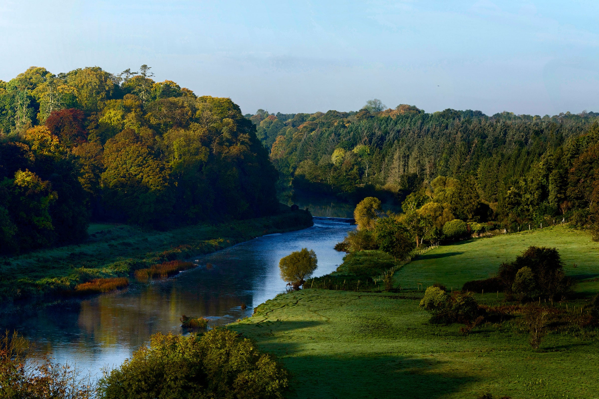
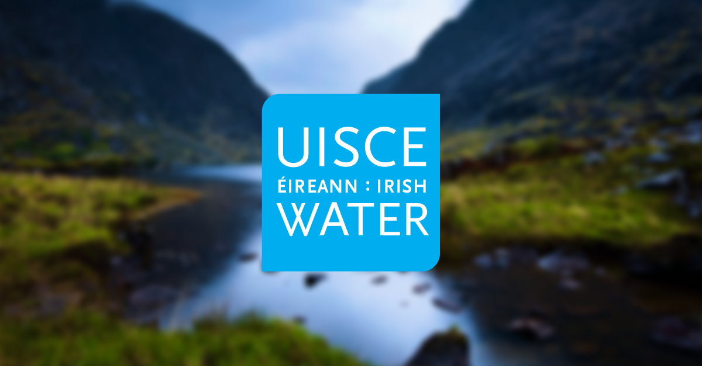

About
Welcome to our website dedicated to promoting Ireland's water quality and ways to conserve it. On this site, you will find information about the current state of Ireland's water, as well as tips and resources for how you can help protect and conserve it.
Water Quality


Ireland's water is known for its high quality and purity. However, there are still threats to the country's water supply, such as pollution and overuse. We aim to educate the public about these issues and advocate for the protection of Ireland's water resources.
Conservation


Conserving water is essential for protecting the quality of Ireland's water supply. We provide information and resources on ways to save water, such as fixing leaks, taking shorter showers, and using water-efficient appliances. We also advocate for policies and practices that promote water conservation.
Resources
We've compiled a list of resources for those interested in learning more about Ireland's water quality and conservation efforts. These include links to government agencies, non-profit organizations, and educational materials.